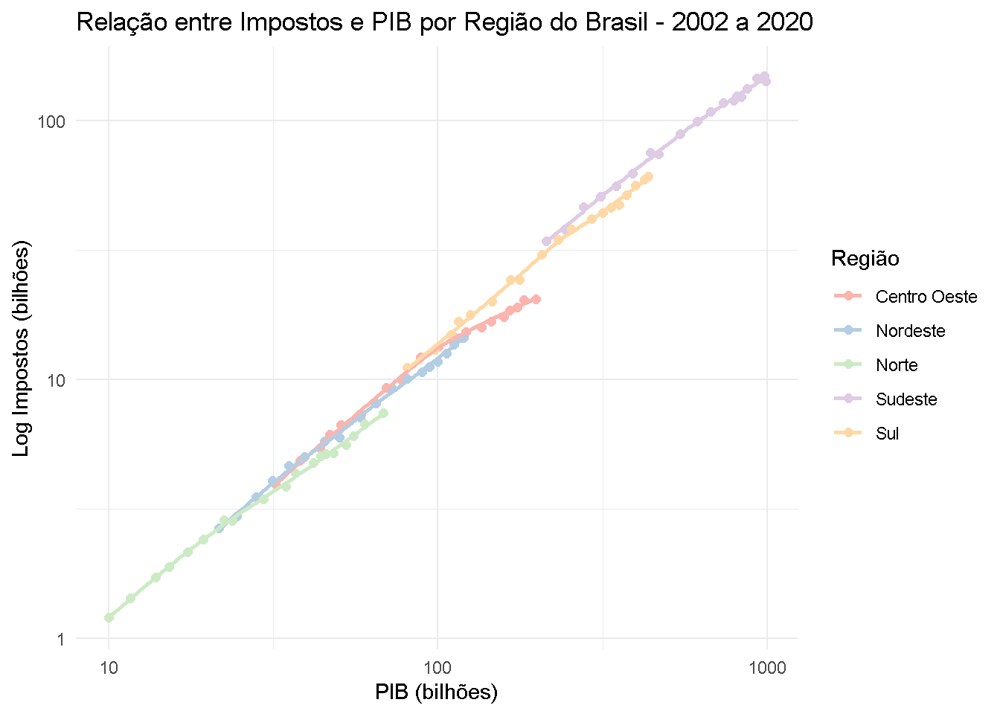
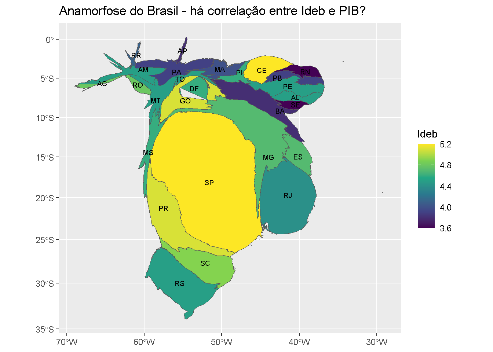
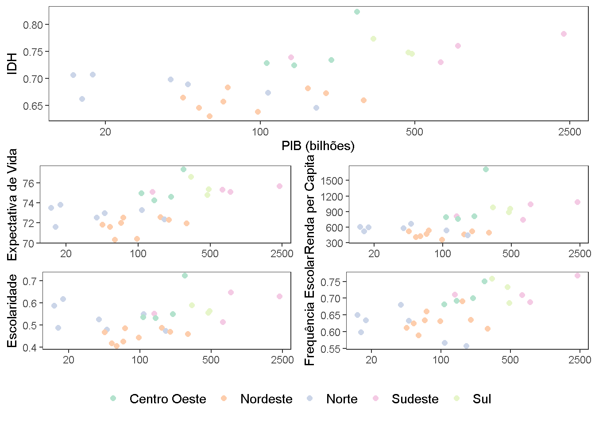
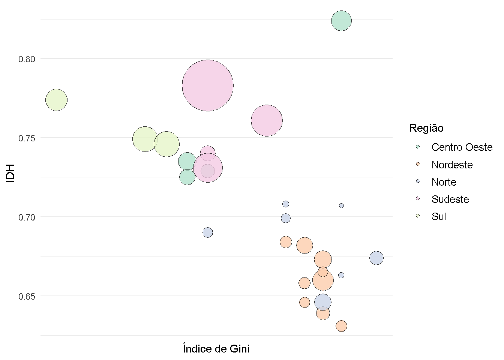

library(tidyverse)
library(geobr)
library(cartogram)
library(sf)
library(cowplot)Análise do PIB Brasileiro e de Indicadores Socioeconômicos
Objetivo do Projeto
Temos como objetivo fazer uma análise detalhada do PIB Brasileiro, considerando os diferentes setores produtivos da economia, e relacionando-o também com indicadores socioeconômicos de naturezas distintas.
Pacotes Usados
Relação de Impostos e as Regiões do Brasil
Analisar a relação impostos/PIB ajuda a compreender o quanto cada UF contribui para a arrecadação levando em conta sua produção anual. A partir do gráfico, observa-se que tal relação mudou muito pouco nas últimas duas décadas, portanto, um aumento do PIB estadual causa um aumento similar da arrecadação por impostos. Nota-se, no entanto, que algumas regiões vem se distanciado dessa relação. Nos últimos anos, na região Centro-Oeste, por exemplo, o aumento do PIB da região não foi acompanhado de um aumento proporcional dos impostos arrecadados.

Gráfico de Anamorfose (Relação do PIB com o Ideb)
A anamorfose é um tipo de análise por cartograma que evidencia uma variável em função do tamanho do território escolhido. No caso, o PIB distorce a área de cada UF de acordo com sua contribuição nacional.
Nota-se que o PIB pouco se relaciona com níveis melhores de educação. Apesar disso, São Paulo lidera em ambas as áreas e, pelo lado do Ideb, Ceará, Goiás e Paraná também ssão destaques, apesar da baixa representação no PIB do país.

Conjunto de Gráficos do IDH

Relação entre IDH e Índice Gini

Os gráficos que relacionam PIB com o IDH e seus setores demonstram que, apesar das desigualdades regionais presentes em ambas as áreas, não observa-se forte correlação entre elas. O que é visível é que as regiões Norte e Nordeste não obtiveram destaque em nenhum dos comparativos.
A relação entre o IDH e o Índice de Gini faz-se importante no contexto de grande desigualdade interegional do país. Mas, para além disso, é analisado se um índice que mede desigualdade também possui dispersão entre os estados brasileiros.
O resultado encontrado é que há, sim, diferentes níveis de desigualdade no país, e estão fortemente correlacionados à qualidade de vida da unidade federativa: estados com pior IDH, presentes nas regiões Norte e Nordeste, mostram-se também os mais desiguais, enquanto a Região Sul encontra-se no outro extremo.
Conclusão
O estudo do PIB brasileiro em seus diferentes setores produtivos, aliado a indicadores socioeconômicos como IDH, expectativa de vida, escolaridade e frequência escolar, permite visualizar disparidades e possíveis caminhos para o desenvolvimento regional. A análise de gráficos e mapas traz insights sobre a concentração de riqueza em determinados estados ao cruzar dados como o Ideb, IDH e PIB, explorando a relação entre desenvolvimento econômico e qualidade de vida.